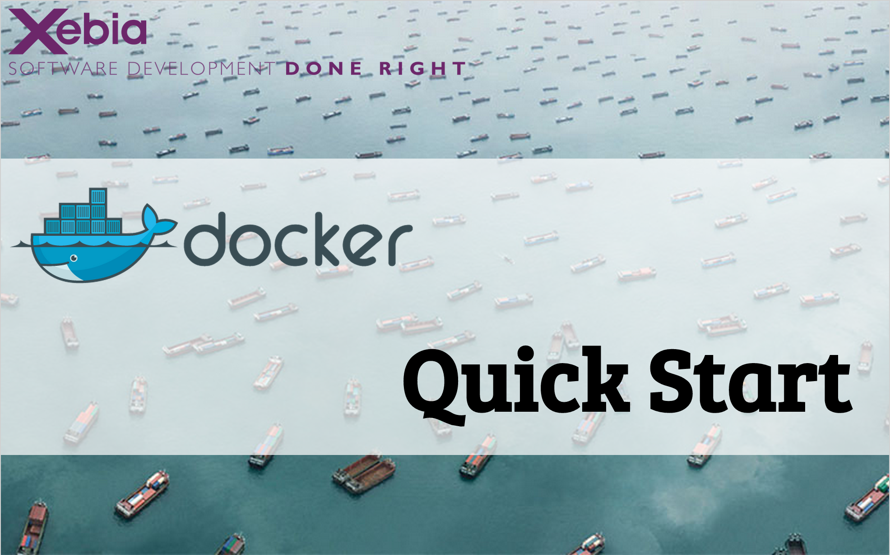
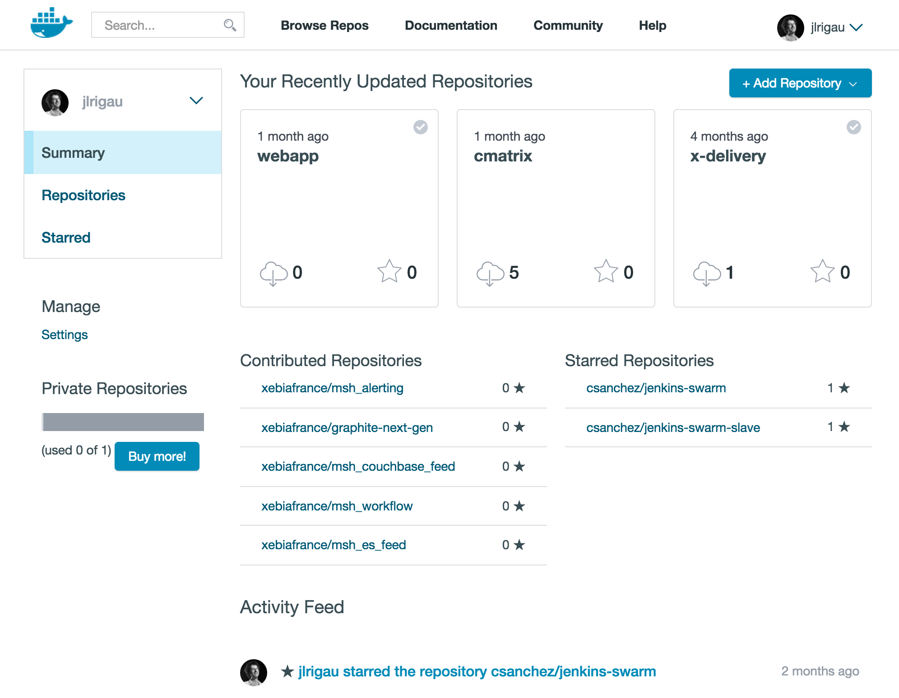
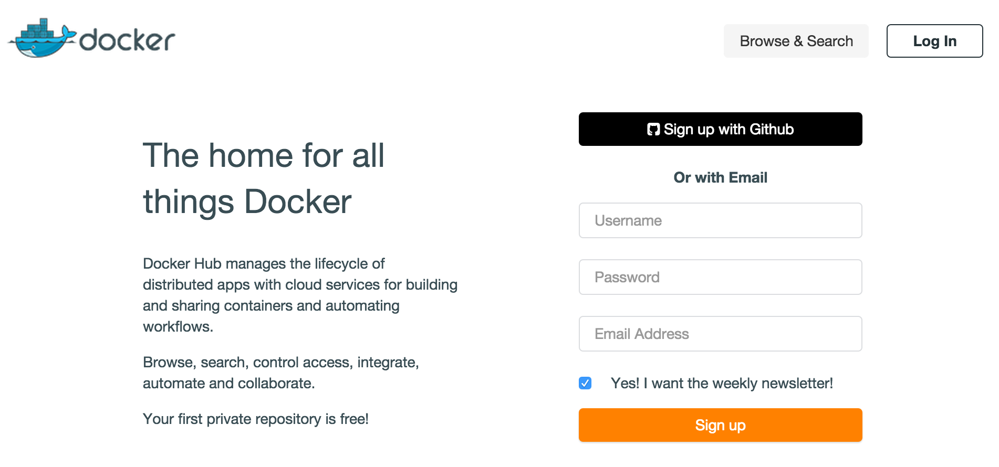
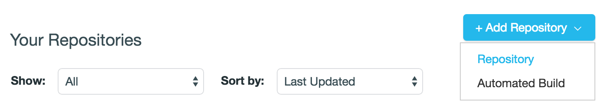
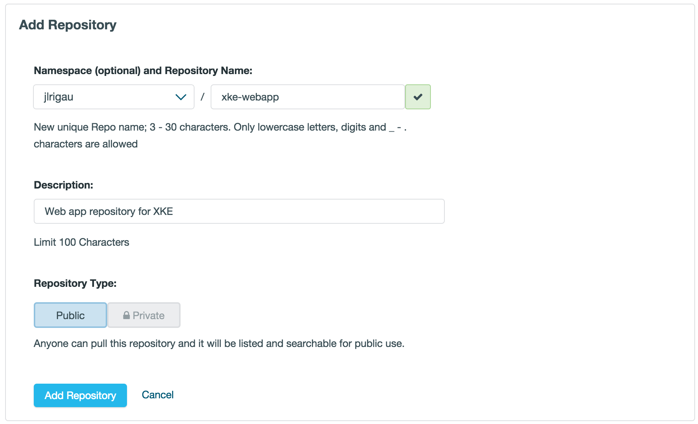
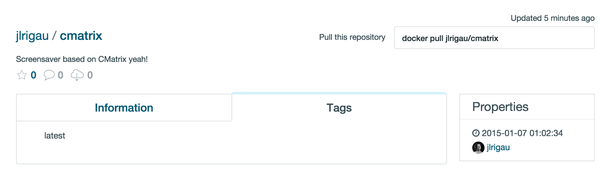

Dans ce workshop, vous aurez à votre disposition une instance amazon. Vous pouvez également utiliser directement votre machine, ou si vous preferez une machine virtuelle.
Toutes les machines utilisent la même clef ssh, et ont le même login ubuntu. Dans le répertoire /home/ubuntu/tools, vous trouverez l'ensemble des outils nécéssaires durant le workshop, c'est à dire :
Pour vous connecter à votre machine, récupérer le fichier docker-janvier.pem ou le fichier docker-janvier.ppk pour les utilisateurs Windows, dans votre répertoire courant (la clef sera révoquée après le workshop). N'oubliez pas de changer les permissions sur le fichier :
{% highlight bash %} $ chmod 400 docker-janvier.pem {% endhighlight %}Pour tester l'installation, et vous connecter à la première instance, taper la commande :
{% highlight bash %} $ ssh -i docker-janvier.pem ubuntu@{{page.vmDns}} {% endhighlight %}
Pour commencer à jouer avec docker, nous allons commencer par chercher une image de base. Les images de base correspondent plus au moin à des distributions linux sans kerner. Pour voir la liste des images disponible, taper la commander :
{% highlight bash %} $ docker images {% endhighlight %}Par défaut, nous vous avons déjà téléchargé une image de type ubuntu, c'est celle-ci que vous voyez. Nous allons maintenant essayer de récupérer une image de type busybox. C'est une distribution linux minimaliste. Pour commencer, nous allons chercher cette image dans le hub docker :
{% highlight bash %} $ docker search busybox {% endhighlight %}Nous remarquons que nous avons plusieurs images de type busybox à notre disposition. Nous allons maintenant récupéré l'image officiel :
{% highlight bash %} $ docker pull busybox {% endhighlight %}Maintenant, réafficher la liste des images pour constater que l'image busybox est maintenant disponible en local sur la machine.
Il est également possible de supprimer une image. Pour celà, lancer simplement la commande :
{% highlight bash %} $ docker rmi busybox {% endhighlight %}Maintenant que nous savons récupérer des images docker, nous allons commencer à jouer avec. Pour commencer, nous allons lancer un container ubuntu en lui spécifiant une commande en paramètre.
{% highlight bash %} $ docker run ubuntu uname -r {% endhighlight %}Concrétement, nous venons de lancer un container docker basé sur une image de type ubuntu, et nous lui avons demander de lancer la commande uname -r (commande qui permet de connaître la version du noyau linux, et qui nous permet facilement de vérifier que les containers partagent avec le même kermel que leur host.). Une fois cette commande achevé, le container s'est éteind de lui même. C'est la une propriété intéressante des containers docker : si il n'a plus de processus en foreground, le container s'éteind. Pour le vérifier, nous pouvons lancer la commande :
{% highlight bash %} $ docker ps {% endhighlight %}qui à l'instar de son éponyme linux, liste les containeur docker vivant. Nous pouvons par contre lancer la commande :
{% highlight bash %} $ docker ps -a {% endhighlight %}qui affiche la liste de tous les containers.
Nous allons maintenant essayer de créer une image docker basé sur ubuntu et contenant un serveur apache (sans ce baser sur une image existante sur le dockerhub). Pour celà, vous allez lancer votre image docker avec un bash (comme nous l'avons fait précédement). Pour information, la commande docker ps vous donne l'indentifiant unique du container, et la commande pour commiter un container et docker commit
Remarque : la commande pour lancer apache en foreground est :
{% highlight bash %} apache2ctl -f /etc/apache2/apache2.conf -e info -DFOREGROUND {% endhighlight %} Lien vers la documentationMaintenant que notre container docker est démarré, nous aimerions bien récupéré certaines informations comme par exemple son adresse IP. Pour celà, docker possède la commande docker inspect. A l'aide de cet commande essayer de récuperer l'adresse IP du container et de récuperer la page d'accueil avec une commande type curl ou wget
Même éteind, un container docker reste présent pour être potentiellement réutilisé par la suite. Pour supprimer un container, on peut utiliser la commande :
{% highlight bash %} $ docker rm apache2 {% endhighlight %}Il est possible de spécifier à notre containeur la quantité de mémoire que nous allons lui allouer, ainsi que la portion du cpu qu'il est autoriser à utiliser. Essayer de limiter la mémoire allouer à notre containeur par exemple à 5 Mo.
Pouvoir accéder à un container via son adresse IP est bien, mais dans la majorité des cas, on aura uniquement accès à l'adresse IP de l'hote. Pour contourner se problème, docker permet de faire du forwarding de port entre le container et l'hôte. Rediriger le port 80 du container vers le port 8000 du la machine hôte. Pour tester, vous pouvez utiliser la commande :
{% highlight bash %} $ wget localhost:8000 {% endhighlight %} Lien vers la documentationLes personnes connaissant un peu netfilter peuvent lancer la commande suivante :
{% highlight bash %} $ sudo iptables -t nat -L {% endhighlight %}Un containeur docker est par définition immutable, Celà signifie que si on souhaite en utiliser un pour héberger un site web, il faudrait créer un nouveau containeur dès qu'une modification du site aurait lieu. (Ceci n'est pas forcément une mauvaise solution).
On va donc créer un répertoire sur la machine hôte pour stocker notre site web (par exemple en créant un fichier index.html bidon), puis monter ce répertoire sur le container docker.
Lien vers la documentation
Un compte sur Docker Hub vous permettra de stocker vos images dans le registre. Pour commencer il suffit d'aller à l'adresse suivante hub.docker.com et de remplir le formulaire
Remarque : Le nom d'utilisateur doit impérativement être en minuscule

Maintenant que vous avez créé votre compte, il va falloir l'activer. Consultez vos e-mails, et cliquez sur le lien de confirmation.
C'est le moment d'utiliser votre nouveau compte pour vous connecter sur le Docker Hub!
{% highlight bash %} $ docker login Username: {{page.groupId}} Password: Email: {{page.groupId}}@email.com Login Succeeded {% endhighlight %}Vos identifiants de connexion sont stockés au sein du fichier ~/.dockercfg
{% highlight bash %} $ cat ~/.dockercfg { "https://index.docker.io/v1/": { "auth":"gjfhdkhgurieabirueb=", "email":"{{page.groupId}}@email.com" } } {% endhighlight %}Vous pouvez maintenant naviguer au sein du Docker Hub! L'onglet "repositories" contient toutes vos images publiques ou privées.
Docker Hub donne accès à plusieurs dizaines de milliers d'images sur lesquelles vous pouvez vous appuyer pour construire vos propre images.
Certaines de ces images sont des images officiels et n'utilise pas de namespace. La plupart des images sont créées et maintenus par la communauté
Cliquez sur le menu déroulant Add Repository et sélectionnez Repository

Vous pouvez laisser le namespace par défaut (votre username), puis indiquez le nom de votre repository. Vous pouvez également ajouter un bref descriptif et enfin, laissez Public sélectionné pour le type de repository. Vous pouvez maintenant soumettre le formulaire en cliquant sur le bouton Add Repository

En cliquant sur Repositories, vous pouvez voir votre nouveau repository. Il vous est dès à présent possible de pousser des images sur ce repository à partir de la ligne de commande docker.
Pour commencer, lancer un terminal à l'intérieur d'un containeur ubuntu en mode intéractif
Il faut maintenant rafraichir la liste des packages disponibles à l'installation, puis installer le package cmatrix.
Tapez exit dans le terminal afin de quitter la session interactive. Vous pouvez maintenant examiner les changements effectués sur votre containeur en utilisant la commande docker diff
Docker conserve la trace de tous les fichiers qui ont été modifiés (C), ajoutés (A) ou supprimés (D) par rapport à l'image de base utilisée pour construire le containeur. Par exemple, le fichier .bash_history a été créé car vous avez éxécuté de commandes dans l'invite de commande.
Vous pouvez maintenant commiter ces modifications afin de pouvoir créer votre propre image cmatrix en indiquant un tag afin de préparer le push sur le registre.
Vous pouvez maintenant utiliser le tag de votre image pour lancer votre containeur
{% highlight bash %} $ docker run -it {{page.groupId}}/cmatrix cmatrix {% endhighlight %}Si vous êtes curieux, vous pouvez jeter un oeil à toutes les couches qui composent votre image avec la commande docker history
{% highlight bash %} $ docker history {{page.groupId}}/cmatrix {% endhighlight %}Maintenant que votre image est correctement nommée, vous pouvez la pousser sur le registre
{% highlight bash %} $ docker push {{page.groupId}}/cmatrix The push refers to a repository [{{page.groupId}}/cmatrix] (len: 1) Sending image list Pushing repository {{page.groupId}}/cmatrix (1 tags) 511136ea3c5a: Image already pushed, skipping 3b363fd9d7da: Image already pushed, skipping 607c5d1cca71: Image already pushed, skipping f62feddc05dc: Image already pushed, skipping 8eaa4ff06b53: Image already pushed, skipping 45994cc5ab57: Image already pushed, skipping Pushing tag for rev [45994cc5ab57] on {https://cdn-registry-1.docker.io/v1/repositories/{{page.groupId}}/cmatrix/tags/latest} {% endhighlight %}Vous pouvez maintenant retourner sur le Docker Hub et vérifier que votre image a bien été poussé en consultant la liste des tags.

Vous pouvez également utiliser le tag de votre image pour lancer votre containeur depuis le Docker Hub. Pour cela commencez par supprimer le containeur que vous venez de lancer puis supprimez l'image {{page.groupId}}/cmatrix
A présent, relancez votre image depuis le Docker Hub
{% highlight bash %} $ docker run -it {{page.groupId}}/cmatrix cmatrix {% endhighlight %}Astuce : Si vous souhaitez vous détacher de votre container sans pour autant l'arrêter, vous pouvez utiliser la combinaison de touches suivantes Ctrl + P / Ctrl + Q. Alors vous pourrez vous réattacher à votre containeur en utilisant la commande docker attach
{% highlight bash %} $ docker attach $(docker ps -lq) {% endhighlight %}Dans la première partie, nous avons vu comment créer un container docker à partir des commandes de base. Il existe un autre moyen de créer des containers docker grâce à un fichier appelé Dockerfile. Nous allons maintenant créer deux containers : l'un contenant un serveur apache, et l'autre contenant un tomcat. Une fois ces deux serveurs crées, nous verrons comment les faire communiquer entre eux.
La commande docker build lancé dans un répertoire cherche un fichier nommé Dockerfile, et à partir de celui-ci crée un image docker. Cette image peut en suiteêtre utilisé pour lancer container.
En nous basant sur se que nous avons vu dans la première partie, nous allons créer un container contenant un serveur apache. Pour commencer, nous allons lui spécifier à partir de quelle image de base nous souhaitons travailler. Dans notre cas, il s'agit toujours d'un image ubuntu
Lien vers la documentationUne fois celà fait, vous pouvez lancer la commande suivante pour créer votre image. L'option -t permet de donner un nom à cet image
{% highlight bash %} $ docker build -t="xebia/apache" . {% endhighlight %}Vous pouvez spécifier si vous le souhaiter le nom de la personne qui maintient cette image. Cette information sert surtout pour le dockerhub pour expliquer aux utilisateurs de l'image l'auteur.
Maintenant, nous allons installer un serveur apache, et indiquer que l'on souhaite que le port 80 puisse être rediriger par la suite.
On peut également spécifier dans le Dockerfile des variables d'environnement qui pourront être réutilisé par le suite. Définissez la variable d'environnement APACHE_RUN_USER et APACHE_RUN_GROUP avec la valeur www-data afin de lancer par la suite notre serveur apache avec des droits restreints. (Le fait d'avoir un processus isolé dans un containeur ne veut absolument pas dire que l'on peut tout lancer en root.)
Indiquer ensuite que vous souhaiter exposer le port 80 de notre containeur à l'hôte.
Pour finir, on va indiquer la commande que notre containeur va executer une fois que celui-ci sera lancé.
Vous pouvez maintenant lancer votre container grâce à la commande :
{% highlight bash %} $ docker run -d -p 8000:80 xebia/apache {% endhighlight %}Vous allez maintenant procéder de manière similaire pour créer une image basé sur ubuntu et contenant un serveur tomcat. Penser à exposer le port 8080 et à ne pas lancer tomcat en arrière plan.
Maintenant que nous avons crées nos containeurs, nous allons essayer de lier nos containeurs entre eux. Pour celà, nous allons commencer par modifier notre containeur apache afin de la transformer en proxy, afin de rediriger les requêtes du apache vers le tomcat.
Fig est un outil permettant de définir l'ensemble des services qui compose une application, au sein d'un même fichier de description, afin de pouvoir les lancer conjointement au sein d'un environnement isolé
Fig se présente sous la forme d'un binaire qui peut être installé de manière très simple avec la commande suivante :
{% highlight bash %} $ curl -L https://github.com/docker/fig/releases/download/1.0.1/fig-`uname -s`-`uname -m` > /usr/local/bin/fig $ chmod +x /usr/local/bin/fig $ fig --version fig 1.0.1 {% endhighlight %}Clonez le code source de l'application
{% highlight bash %} $ git clone https://github.com/jlrigau/simplefig.git $ cd simplefig {% endhighlight %}Vous devez alors créer un nouveau Dockerfile
{% highlight bash %} FROM python:2.7 ADD requirements.txt /code/requirements.txt WORKDIR /code RUN pip install -r requirements.txt ADD . /code {% endhighlight %}Maintenant vous pouvez ajouter un fichier fig.yml pour stocker les propriétés d'éxécution de votre application :
{% highlight bash %} web: build: . command: python app.py ports: - "5000:5000" volumes: - .:/code links: - redis redis: image: orchardup/redis {% endhighlight %}Il ne vous reste plus qu'à lancer la commande fig up et regarder fig construire puis lancer votre application avec les bons paramètres, notamment les liens entre vos différents containeurs